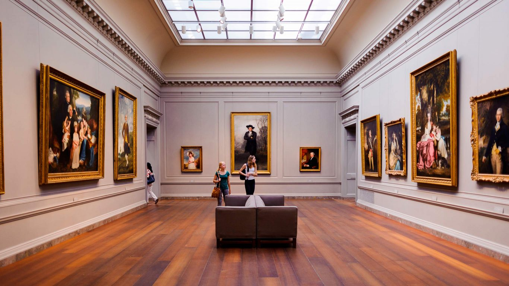
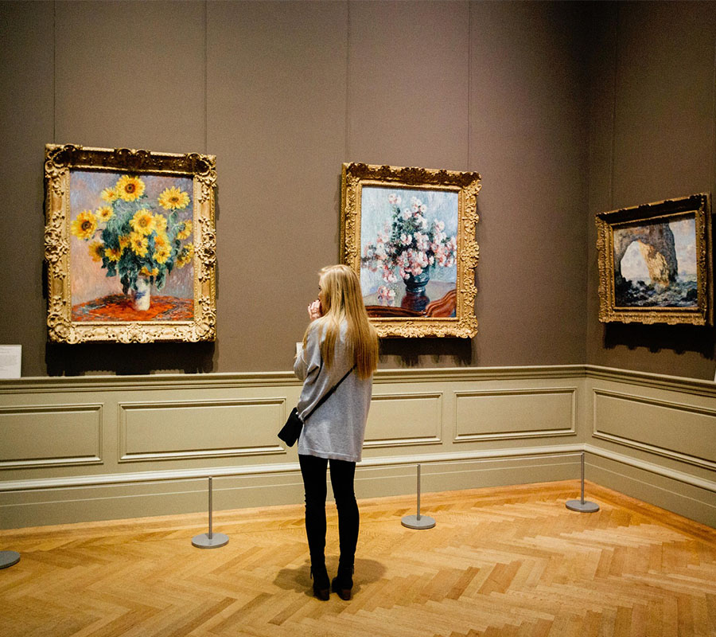
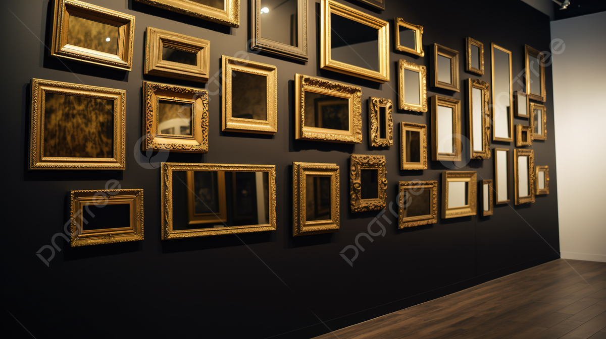
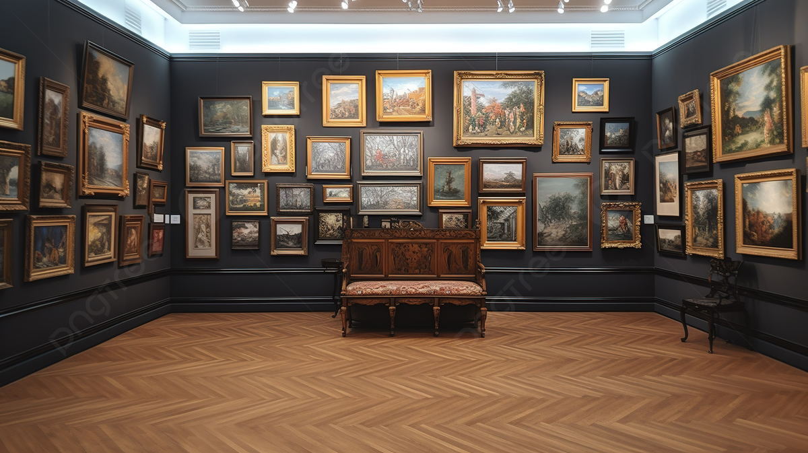
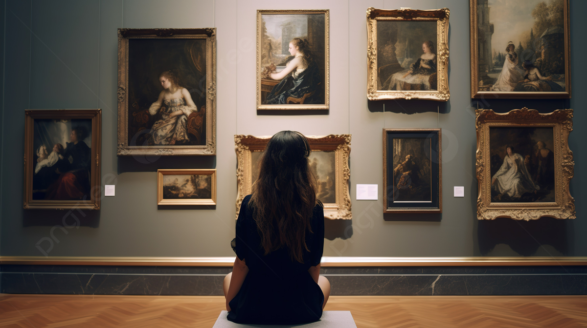
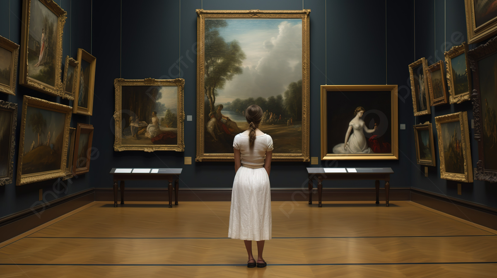
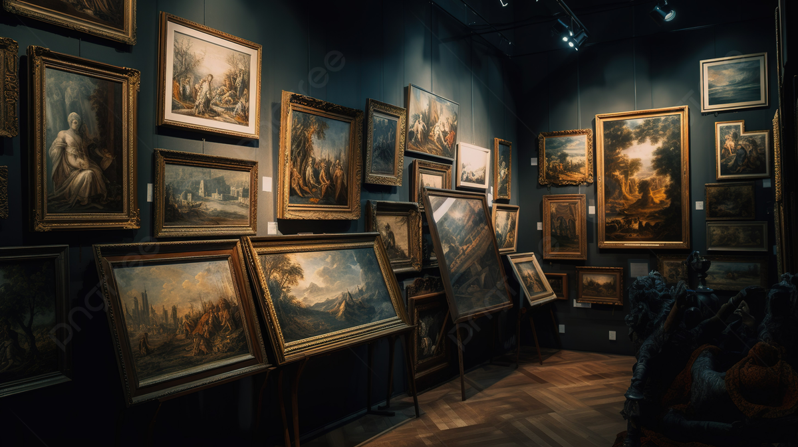
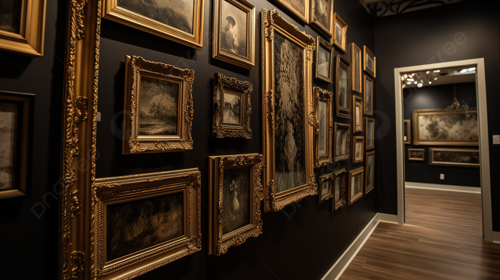

¿Qué es un museo?

Un museo es una institución pública o privada, permanente, con o sin fines de lucro, abierta al público y al servicio de la sociedad y de su desarrollo. Los museos adquieren, conservan, restauran, investigan, comunican y exhiben bienes de interés cultural.
El término museo proviene del latín musēum; y este, a su vez, del griego museion, templo y lugar dedicado a las musas, inspiradoras de la música y el arte. Es por esto que la palabra museo evoca inmediatamente la palabra arte. Sin embargo, existen muchos tipos de museos, incluyendo los dedicados a aspectos más pragmáticos de la vida.
Caracteristicas

La arquitectura de un museo debe tomar en cuenta:
Iluminación
Accesibilidad
Distribución del espacio
Seguridad
Logistica
Por su parte, las colecciones no son una simple acumulación de objetos y documentos, sino que deben recopilarse, almacenarse y mostrarse de forma coherente y siguiendo hilos conceptuales.
Los museos también deben contar con un área de investigación, y con comunicación y colaboración entre ellos para lograr el fin común de preservación y divulgación.
Galeria

Galeria

Galeria

Galeria

Galeria

Galeria

Galeria
Tipos De Museos